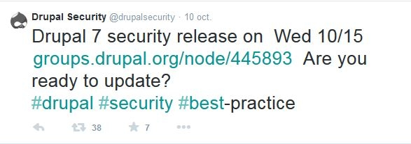
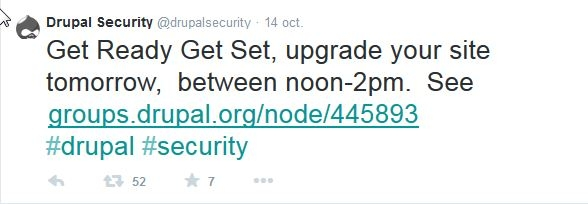
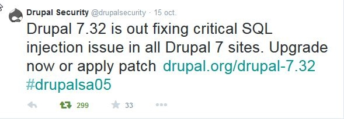
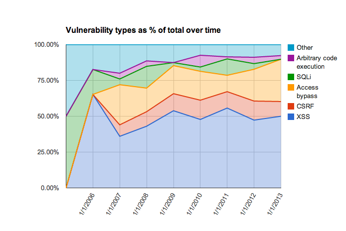

Drupal
Est-il
Sécurisé ?
Retour sur le #Drupalgeddon et mise en perspective
#Drupalgeddon ?
- Le 15 octobre, le bulletin de sécurité SA-CORE-2014-005 est publié
- Ce bulletin annonce une vulnérabilité par injection SQL de tous les sites Drupal 7
- Cette faille de sécurité est jugée hautement critique. En bref, cette vulnérabilité permet à un attaquant anonyme de compromettre n'importe quel site Drupal 7
- C'est la plus sérieuse faille de sécurité publiée depuis très longtemps, au moins depuis 9 ans.
Petit retour sur la chronologie de l'événement
Découverte
- Découverte de la vulnérabilité par la société Sektion Eins lors d'un audit sécurité le 18/09 environ
- Saisie de la Security Team
Préparation
- Correction de la vulnérabilité
- Choix d'une fenêtre de tir optimal pour la publication du bulletin de sécurité (DrupalCon)
- Une publication prématurée n'aurait pas permis aux drupaliens présents à la DrupalCon de réagir à la juste mesure
Communication
Dès le 10 octobre

Communication
Le 14 octobre, nous sommes clairement prévenus d'être prêt pour le lendemain

Très inhabituel
Publication
Le 15 octobre, publication de la vulnérabilité

Urgence : se protéger
- Soit migrer vers la version 7.32
- Soit appliquer le patch fourni (1 ligne de code)
- A noter que ce patch permet de protéger toutes les versions de Drupal 7 en quelques secondes
curl https://www.drupal.org/files/issues/SA-CORE-2014-005-D7.patch | patch -p1
Le mythe de la sécurité
- Heartblead, ShellShock, Java, Windows, Wordpress doivent vous évoquer des souvenirs ?
- Vous connaissez un logiciel infaillible ?
Le mythe de la sécurité
- Le risque zéro n'existe pas
- La sécurité n'est pas un dogme, un état binaire oui / non...
- ...mais avant tout un processus continue d'amélioration.
Evolution des vulnérabilités

L'utilisation de Drupal par des organisations gouvernementales (Maison blanche, Gouvernement Français, etc.)
démontre juste que Drupal est loin d'être le dernier dans le domaine de la sécurité.
Le plus important n'est pas de savoir si Drupal est sécurisé
La gestion de la sécurité
- Organsation dédiée : Security Team, protocoles, planning
- Un volet technique / un volet organisationnel : règle fondamentale de toute politique de sécurité
- La sensibilisation des utilisateurs (exemple de la publication de la faille dans une issue publique)
- Un esprit d'amélioration continue : faire en sorte qu'une erreur ne puisse plus se reproduire :
Improve clarity of the reporting security issues warning
Drupalgeddon a permis de démontrer comment Drupal gère sa sécurité
- avec sérénité
- avec une organisation bien rodée : maturité
- avec responsabilité : quoi faire après
Drupal plus fort
- De part sa présence de plus en plus prédominante au sein de grands groupes, administrations
- Drupal fait l'objet d'audit sécurité de plus en plus avancés
- Qui au final le renforce sur cet aspect
Et après #drupalgeddon
- Drupal Core PSA-2014-003 : Annonce publique du 29/10/2014
- Premières vagues d'attaques constatées 7 heures après la publication de la faille
- Boucliers préventifs déployés sur les plateformes d'hébergement spécialisées
- Un site Drupal peut être "considéré" comme compromis s'il n'a pas été protégé avant 23h00 le 15/10
Quelques outils
- Le site a-t-il été patché à votre insu ?
- Site Audit et
Drupalgeddon pour détecter les vecteurs d'attaques connus
- A noter que le respect des pratiques recommandés au niveau du serveur web
permet de se protéger d'une bonne part des attaques (les plus compliquées à détecter surtout sans git)
- Git pour détecter les modifications de fichiers
- Une méthode radicale : une restauration antérieur au 15/10